|
 |
 |
Puntos de
Inflexión Ecológica
- Cómo funcionan?
- Transformando círculos viciosos a círculos virtuosos
- Ingredientes para el éxito
- Elaboren sus propios Puntos de Inflexión Ecológica
Historias por Región
Historias por Tema
- Agricultura
- Agua y Cuencas
- Bosques
- Ecosistemas Urbanos
- Educación
- Energía
- Negocios
- Pesquerías
- Salud Pública
Videos Cortos
- Salvando un arrecife coral y una pesquería
(Filipinas) - Revitalizando vecindades urbanas con jardines comunitarios
(Nueva York) - Revirtiendo la deforestación tropical con bosques comunitarios
(Thailandia) - Rellenando aguas subterráneas con captación pluvial
(Rajastán, India) - Escapando la trampa de pesticidas
(India)
Explicando el Éxito
- Salvando un arrecife coral y una pesquería
(Filipinas) - Revitalizando vecindades urbanas con jardines comunitarios
(Nueva York) - Revirtiendo la deforestación tropical con bosques comunitarios
(Thailandia) - Rellenando aguas subterráneas con captación pluvial
(Rajastán, India) - Escapando la trampa de pesticidas
(India)

Ecología Humana: Presenta los principios de la ecología humana que sirven de fundamento a los Puntos de Inflexión Ecológica
EUA - California (Berkeley) - El Patio Escolar Comestible: Conectando Niños a la Tierra y Alentando Hábitos Saludables de Comer
- Breve: Al reemplazar un estacionamiento con una hortaliza escolar y una cocina, la escuela secundaria Martin Luther King Jr. Middle crea herramientas para la educación y el cambio social.
- Lea la historia detallada
- Fotos tomadas por Amanda Suutari - Todas las fotos están disponibles para descargarse gratis; favor de atribuir a la fotógrafa y al sitio de Internet.
- Pulse sobre la foto para ver los detalles.

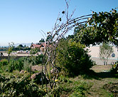
Martin Luther King Jr.

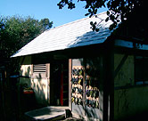
Edible Schoolyard toolshed

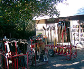
In front of the toolshed

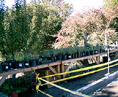
'Starts' ready for planting

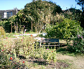
Bench on garden path

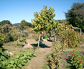
In the garden

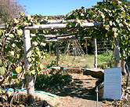
The Ramada

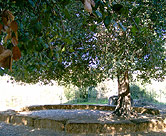
Shady tree in garden

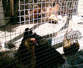
Hens in the garden coop

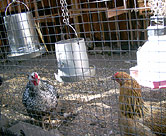
Close-up of chickens

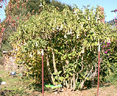
Datura flowers

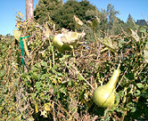
Squash

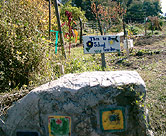
Student Sign and paintings

Another creative sign

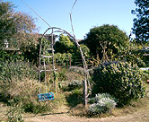
Entrance to herb garden

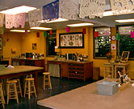
Edible Schoolyard kitchen

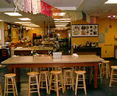
Kitchen as classroom

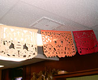
Dia de los Muertos

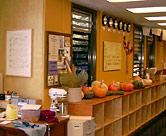
Seasonal squashes

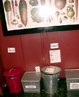
Recycling in the kitchen

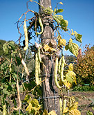
Beans ready for harvest

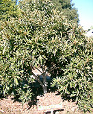
Loquat Tree

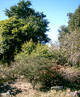
California natives

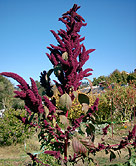
Amaranth

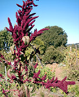
Amaranth